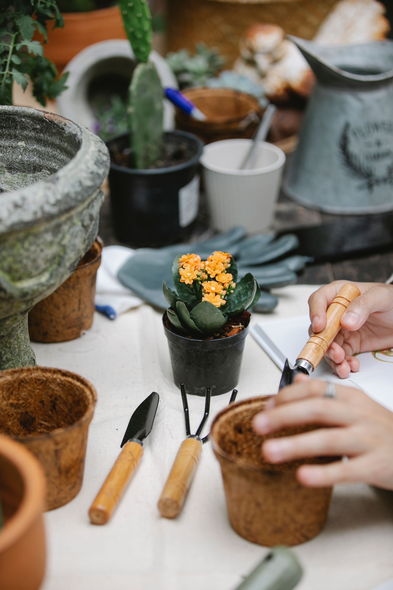
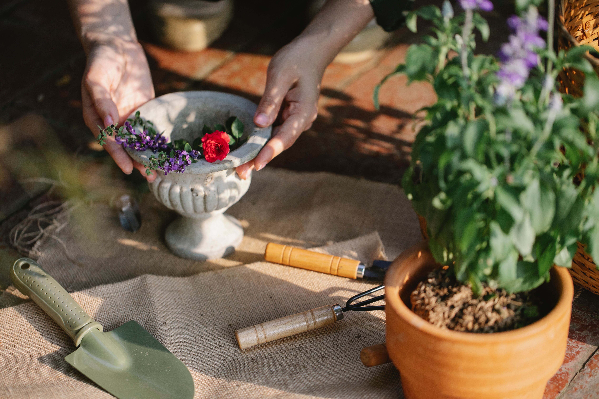
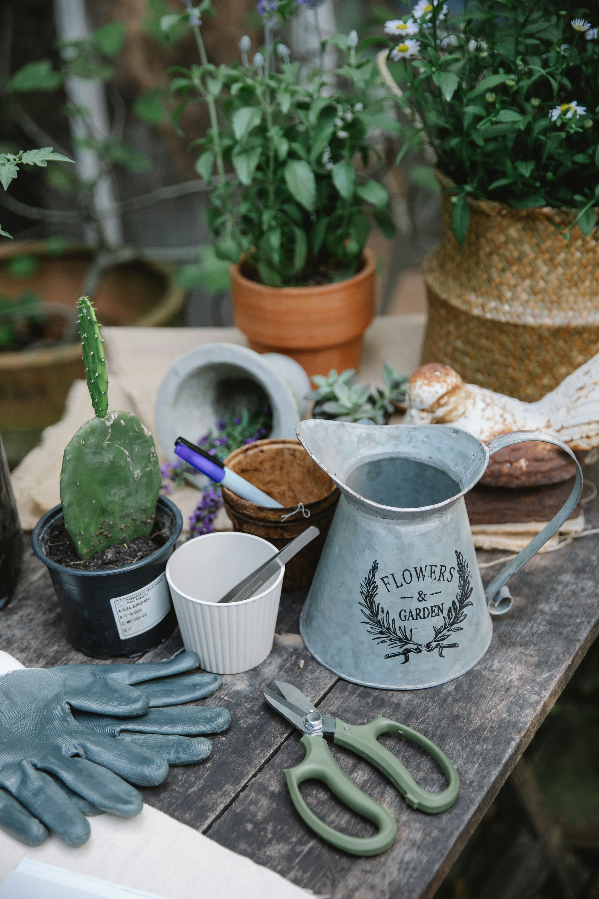

A home vegetable garden can begin with only a few pots, a balcony, a patio, or a small sunny section of the yard. Success depends on matching crops to the available light and season, using suitable containers or beds, watering consistently, and keeping the routine realistic.
Choose the Best Location
A productive home garden begins with location. Observe balconies, patios, terraces, windows, and outdoor areas to identify where useful sunlight is available and where containers or beds can be placed safely.
Many edible crops benefit from several hours of direct light, but exact requirements vary. Instead of assuming a location is sunny, observe it at different times over several days.
Also consider access to water, wind exposure, drainage, and convenience. A garden that is difficult to reach is harder to maintain consistently.
Start Small
A few containers or a compact raised bed can teach you more than a large garden that becomes overwhelming. Begin with a number of plants you can realistically water, inspect, and harvest.
Expanding later is easy once you understand the conditions and your routine.
Starting small also limits the cost of mistakes with containers, soil, irrigation, or crop selection.
Decide Between Containers and In-Ground Beds
Containers are useful on balconies, patios, and places with unsuitable soil. They offer flexibility but usually dry faster and require closer watering attention.
In-ground beds provide more root space and can hold moisture differently, but existing soil conditions need to be understood.
Raised beds can improve access and organization but require materials, soil volume, and suitable construction.
Choose Containers With Enough Space
Container size should match the mature root system of the crop. A pot that looks large beside a seedling may still be too small later.
Every container needs appropriate drainage. Waterlogged roots can cause serious problems, while tiny pots may dry extremely quickly.
Use containers made from materials suitable for food-growing conditions and outdoor exposure.
Use a Suitable Growing Medium
Container gardens generally perform better in a growing medium designed for containers than in dense garden soil placed directly in pots.
The mix should provide a balance of drainage, moisture retention, and root aeration.
Fill containers adequately while leaving enough space at the top for watering without washing material over the edge.
Select Crops You Actually Eat
Grow foods that the household enjoys and that suit the available conditions. Herbs, leafy greens, peppers, tomatoes, radishes, beans, and other crops may be options depending on climate and space.
Do not choose only according to photographs. Check mature size, season, temperature needs, and days to harvest.

A smaller selection of useful crops is often more satisfying than many plants that are rarely used.
Understand the Growing Season
Planting time depends on local climate and the crop. Some vegetables prefer cooler conditions while others need sustained warmth.
Use locally relevant planting calendars or reliable regional guidance rather than copying schedules from a different climate.
Succession planting can extend harvests when timing and space allow.
Seeds or Seedlings
Seeds are economical and provide many variety choices, but they require germination time and careful early management.
Seedlings can make the beginning easier and shorten the time until harvest, although they cost more per plant.
A combination works well for many home gardeners.
Water Consistently
Edible plants need consistent moisture, but too much water can be as harmful as too little. Check the growing medium rather than watering automatically by the clock.
Containers may need frequent attention during hot or windy weather. Larger containers generally change moisture more slowly than very small ones.
Water near the root zone when practical and make sure excess water can drain.
Feed Plants Appropriately
Vegetables grown in containers depend on a limited volume of growing medium, so nutrients can become depleted over time.
Use fertilizers suitable for edible gardening and follow product directions. More fertilizer is not automatically better.
Plant appearance, growth stage, crop type, and the growing medium all influence nutrient needs.

Use Vertical Space
Trellises and supports can help climbing crops use vertical space and can improve organization in small gardens.
Install supports before plants become large and make sure they are stable enough for mature growth and wind.
Do not position tall crops where they will unnecessarily shade smaller plants.
Group Crops by Similar Needs
Plants sharing similar sun and watering needs are easier to manage together.
Avoid combining a very thirsty crop with a drought-tolerant herb in a small container if their care requirements conflict.
Grouping by needs simplifies routine maintenance and reduces guesswork.
Leave Enough Space Between Plants
Overcrowding can reduce airflow, increase competition, and make inspection difficult.
Seed packets and plant labels provide useful spacing guidance, but container dimensions and mature plant size should also be considered.
Thinning seedlings can feel wasteful, yet it often improves the remaining plants.
Watch for Pests Early
Inspect leaves, stems, flowers, and soil regularly. Small pest problems are easier to manage when discovered early.
Correct identification matters before treatment. Not every insect is harmful, and some are beneficial.
Use control methods appropriate for edible crops and follow all product directions where products are used.
Prevent Disease Through Good Habits
Healthy spacing, appropriate watering, clean tools, and removal of badly affected plant material can reduce some common problems.

Avoid keeping foliage constantly wet when the crop and climate make that problematic.
Rotate crops where practical and avoid repeatedly growing the same susceptible crop in the same small bed without considering soil health.
Harvest Regularly
Frequent harvesting can encourage continued production in many herbs and vegetables and prevents usable food from becoming overripe.
Learn the appropriate harvest stage for each crop. Bigger is not always better for flavor or texture.
Use clean cutting tools where needed and handle plants gently.
Keep Simple Records
Write down planting dates, varieties, harvest periods, and major problems. A few notes are enough.
These records help identify which crops perform well in the actual conditions of your home.
Next season, repeat successful choices and replace those that required too much effort for too little return.
Compost Where Practical
Composting some kitchen and garden materials can reduce waste and create useful organic matter, but the system needs to suit the property.
Small-space composting requires attention to moisture, aeration, and what materials are added.
If home composting is not practical, use locally available compost products or municipal programs where available.
Plan for Vacations and Busy Weeks
Think about watering before leaving home for several days. Depending on the garden, a trusted person, appropriate irrigation, or moving certain containers may help.
Test any automatic system before relying on it.
A garden designed around your real schedule is more sustainable than one that requires perfect daily attention.
Expand Only After the First Successes
Once a small garden is producing reliably, add another container, crop, or bed gradually.
Expansion should respond to what you learned about sunlight, watering, pests, and the foods you actually used.
This keeps the home garden enjoyable instead of turning it into an obligation.
Frequently Asked Questions
Can I create a vegetable garden without a yard?
Yes. Many herbs and vegetables can grow in containers on balconies, patios, terraces, or other suitable spaces with adequate light and safe placement.
How much sunlight does a home garden need?
Requirements vary by crop. Many fruiting vegetables prefer substantial direct light, while some leafy crops tolerate less. Check the needs of each plant.
What are good crops for beginners?
Choose crops suited to your climate, season, space, and diet. Herbs and some leafy greens can be approachable, but local conditions matter.
How often should I water containers?
There is no universal schedule. Check moisture, weather, container size, plant size, and drainage. Hot or windy conditions can increase demand.
Should I start from seeds or seedlings?
Both work. Seeds cost less and offer variety, while seedlings can simplify the beginning and shorten the wait for established plants.
Conclusion
A productive home garden grows from observation and consistency. Choose the best available location, start with a manageable number of crops, use appropriate containers and growing medium, water according to real conditions, and inspect plants regularly. Keep notes and expand only after learning what works in your space. The goal is not to grow everything at once, but to create a practical garden that provides useful harvests and remains enjoyable to maintain.
Clean and Store Tools Properly
Keep hand tools clean and dry and use separate, clearly stored products intended for edible gardening. Organized tools make short maintenance sessions faster and reduce the chance of neglecting small jobs.
At the end of a growing cycle, clean containers and supports as appropriate, remove failed plant material, and prepare the area for the next crop.
Clean and Store Tools Properly
Keep hand tools clean and dry and use separate, clearly stored products intended for edible gardening. Organized tools make short maintenance sessions faster and reduce the chance of neglecting small jobs.
At the end of a growing cycle, clean containers and supports as appropriate, remove failed plant material, and prepare the area for the next crop.
Clean and Store Tools Properly
Keep hand tools clean and dry and use separate, clearly stored products intended for edible gardening. Organized tools make short maintenance sessions faster and reduce the chance of neglecting small jobs.
At the end of a growing cycle, clean containers and supports as appropriate, remove failed plant material, and prepare the area for the next crop.
Clean and Store Tools Properly
Keep hand tools clean and dry and use separate, clearly stored products intended for edible gardening. Organized tools make short maintenance sessions faster and reduce the chance of neglecting small jobs.
At the end of a growing cycle, clean containers and supports as appropriate, remove failed plant material, and prepare the area for the next crop.
Clean and Store Tools Properly
Keep hand tools clean and dry and use separate, clearly stored products intended for edible gardening. Organized tools make short maintenance sessions faster and reduce the chance of neglecting small jobs.
At the end of a growing cycle, clean containers and supports as appropriate, remove failed plant material, and prepare the area for the next crop.
Clean and Store Tools Properly
Keep hand tools clean and dry and use separate, clearly stored products intended for edible gardening. Organized tools make short maintenance sessions faster and reduce the chance of neglecting small jobs.
At the end of a growing cycle, clean containers and supports as appropriate, remove failed plant material, and prepare the area for the next crop.
Clean and Store Tools Properly
Keep hand tools clean and dry and use separate, clearly stored products intended for edible gardening. Organized tools make short maintenance sessions faster and reduce the chance of neglecting small jobs.
At the end of a growing cycle, clean containers and supports as appropriate, remove failed plant material, and prepare the area for the next crop.
Clean and Store Tools Properly
Keep hand tools clean and dry and use separate, clearly stored products intended for edible gardening. Organized tools make short maintenance sessions faster and reduce the chance of neglecting small jobs.
At the end of a growing cycle, clean containers and supports as appropriate, remove failed plant material, and prepare the area for the next crop.
Clean and Store Tools Properly
Keep hand tools clean and dry and use separate, clearly stored products intended for edible gardening. Organized tools make short maintenance sessions faster and reduce the chance of neglecting small jobs.
At the end of a growing cycle, clean containers and supports as appropriate, remove failed plant material, and prepare the area for the next crop.
Clean and Store Tools Properly
Keep hand tools clean and dry and use separate, clearly stored products intended for edible gardening. Organized tools make short maintenance sessions faster and reduce the chance of neglecting small jobs.
At the end of a growing cycle, clean containers and supports as appropriate, remove failed plant material, and prepare the area for the next crop.
Clean and Store Tools Properly
Keep hand tools clean and dry and use separate, clearly stored products intended for edible gardening. Organized tools make short maintenance sessions faster and reduce the chance of neglecting small jobs.
At the end of a growing cycle, clean containers and supports as appropriate, remove failed plant material, and prepare the area for the next crop.